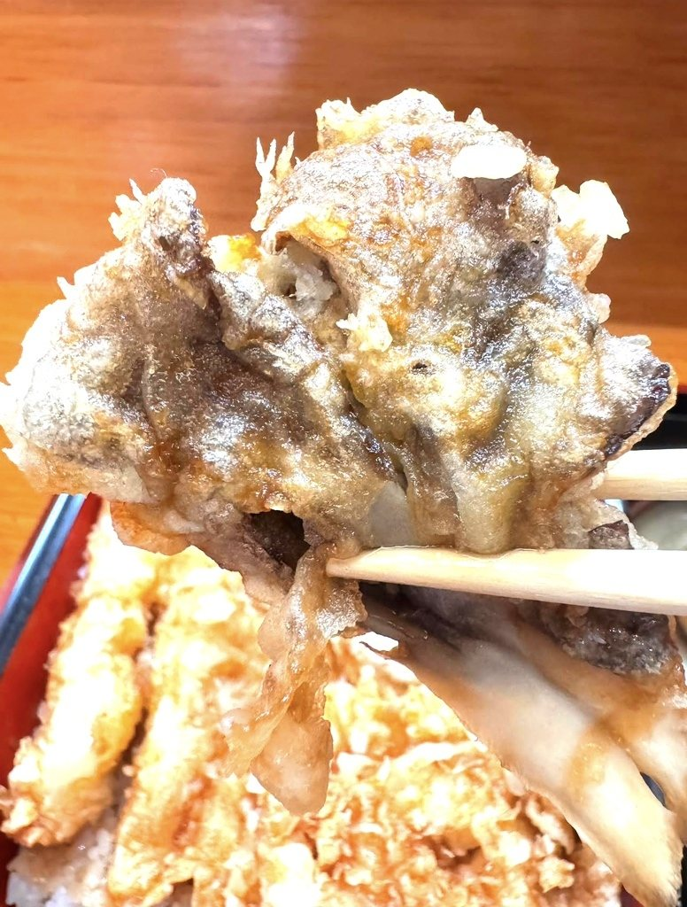
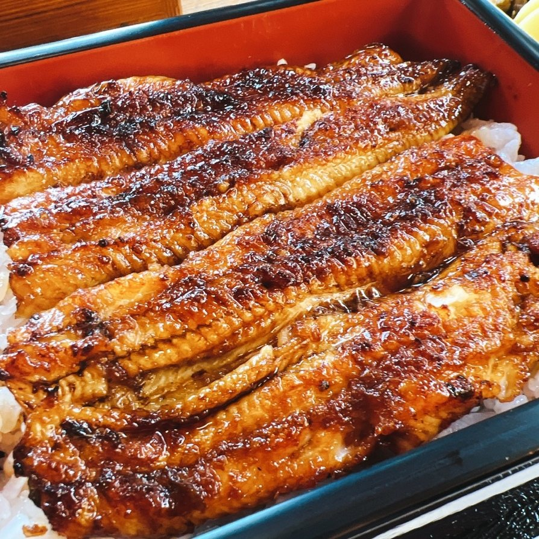

看板のお料理
丼、重、そば。どれも同じ油で揚げております。お昼のミニ丼セットは1,276円（2026年6月現在）でご用意しております。

K A K I A G E匠かき揚げ丼
天然エビ・白身魚・季節の野菜をまとめて揚げ、秘伝のタレをくぐらせてご飯にのせております。小鉢、香の物、汁をお付けしてお出しします。
丼はお昼のお品書きです。夜は「かき揚げ重」「匠天重」として同じ揚げものをお出ししております。

U N A J Uうな重
国産の活うなぎを裂き、串を打ち、白焼きにして蒸してから、もう一度タレを付けて焼き上げます。身の締まりと脂の乗りが違います。
2日前までの完全ご予約制でお受けしております。お値段は時価となりますので、お電話にてお尋ねくださいませ。

S O B A手打ちの常陸秋そば
金砂郷地区の常陸秋そばを打っております。もりそばは一人前を二枚でお出ししますが、一枚でも承ります。もりうどんにもお替えいただけます。
手打ちそばは限定食です。お早めのお越しをおすすめしております。